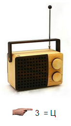

Игры без компьютера
Как разгадывать ребусы
 Несколько одинаковых предметов на одном изображении читаются во множественном числе.
Если предмет на рисунке перевернут, то его название читают справа налево.
Если слева (внизу) от рисунка стоят запятые, то отбрасываются первые буквы слова по количеству запятых.
Если справа (сверху) от рисунка стоят перевёрнутые запятые, то отбрасываются буквы в конце слова.
Если возле рисунка изображена зачёркнутая буква, то ее необходимо исключить из названия предмета.
Если возле рисунка изображена зачёркнутая цифра, то необходимо исключить из названия предмета букву с таким порядковым номером.
Если возле рисунка изображена буква вместе со знаком сложения, то необходимо эту букву вставить в название изображенного предмета.
Если возле рисунка изображена цифра, знак равенства и буква, то букву с указанным порядковым номером необходимо заменить на указанную.
Если предметы, цифры или буквы изображены один в другом, то их названия читаются с добавлением предлога "в" (перед или между названий).
Если предметы, цифры или буквы изображены один на другом, то их названия читаются с добавлением предлога "на", "над" или "под" (перед или между названий).
Если один предмет, цифра или буква изображен за другим, то их названия читаются с добавлением предлога "перед" или "за" (перед или между названий).
Если предметы, цифры или буквы изображены один (меньший) возле другого (большего), то их названия читаются с добавлением предлога "у" или "при" (перед или между названий).
Если большая буква составлена из маленьких букв (много раз повторенных), то при чтении используется предлог "из" (перед или между названий).
Если поверх одной (большой) буквы написана другая (маленькая, много раз повторенная), то при чтении используется предлог "по" (перед или между названий).
Если две одинаковые буквы расположены "рядом", то при чтении используется существительное "пара".
Отдельные слоги в ребусе можно изображать при помощи цифр, нот, букв греческого алфавита, химических элементов и т.п.
Если возле рисунка перечислены цифры, то буквы из названия предмета следует читать в указанном цифрами порядке.
Если рядом с зачёркнутой буквой написана другая, то ее следует читать вместо зачёркнутой. Иногда в этом случае между буквами ставится знак равенства.
Если возле рисунка изображено "две цифры со стрелками направленными в разные стороны", в таком случае в названии рисунка необходимо указанные цифрами буквы поменять местами".